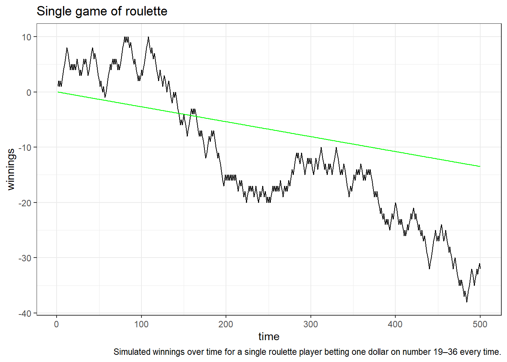
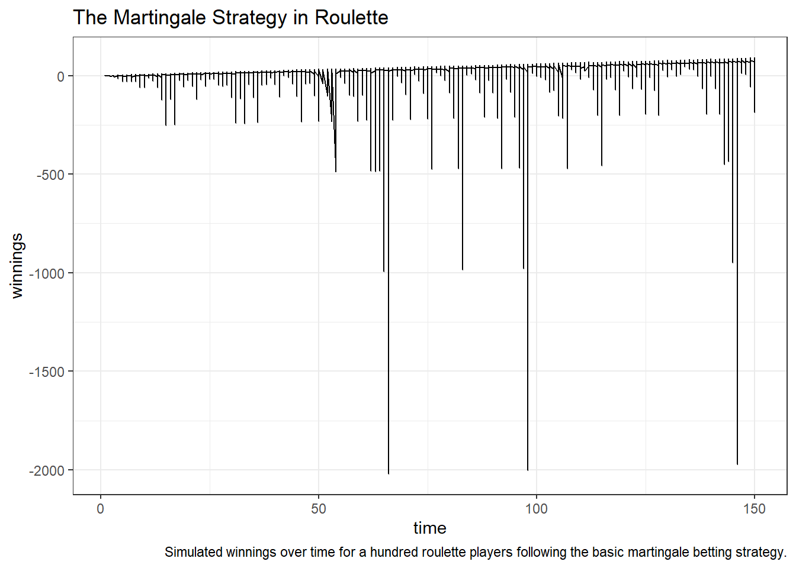

Analyzing Simulations
Outcomes
- Visualize and compare complex data
- Use higher order functions
- Explain unfamiliar code written by another person
Background
As promised, in this assignment we will use the functions representing random variables that we developed in the previous assignment to explore different strategies for playing the game of roulette.
Instructions
- Don’t be constrained by the questions. If you want to ask something deeper, then go for it!
- Answer the following questions, and show all your R code.
- Upload your submission to Canvas in nicely formatted HTML generated from Rstudio.
Below are some functions and code you can use to complete the assignment.
Questions
1 - Simple strategies
Create at least one visualization for at least one of the betting strategies above. For example, we can simulate how much a single player wins at each time if she sits down and plays 20 games, always betting one unit of money on even, as follows.

One fun visualization is to draw many partially overlapping opaque lines, with each line representing a sequence of winnings by a single player. You can also add:
- A line for the expected value of winnings at each point in time
- A line for the actual simulated average won by each player at each point in time
- Labeled vertical and horizontal lines representing typical player behavior, or casino betting limits.
Comment on your visualization(s). What does it show? What questions does it answer?
set.seed(893)
ntimes = 500
expected = data.frame(time = seq(ntimes))
expected$winnings = (-0.027 * expected$time)
highdata = play(strategy = simple_strategy(high), nplayers = 1, ntimes = 500)
g = ggplot(data = highdata, mapping = aes(x = time, y = winnings)) +
geom_line() +
labs(title = "Single game of roulette", caption = "Simulated winnings over time for a single roulette player betting one dollar on number 19–36 every time.") + geom_line(data = expected, color = "green")
print(g)
This is a simulated winnings data of a single player always betting one unit of money on number 19-36 every time, and playing 500 games along with a line for the expected value of winnings at each point in time.The graph shows that the player’s winnings are above the expected value of winnings at each point in time before the 140th approximately. As times pass, there are more losings than winnings.By the 500th time, winnings are at -31 that are 17 less winning approximately below the expected value of winnings at that point in time. Over all, the house wins if the player bet on high number every time for 500 times.
1 - Martingale strategy
The simplest martingale strategy for betting on a game with nearly equal chances of win and loss is to start with the minimum bet, and then double your previous bet every time you lose. If you win, then you again start fresh by betting the minimum amount. It’s possible to use this strategy in roulette, but what will happen?
doublebet = function(x, initialbet = 1, strategy = even)
{
winnings = rep(NA, length(x))
betsize = initialbet
current_winnings = 0
for(i in seq_along(x)){
if(strategy(x[i]) == 1){
current_winnings = current_winnings + betsize
betsize = initialbet
} else {
current_winnings = current_winnings - betsize
betsize = 2 * betsize
}
winnings[i] = current_winnings
}
winnings
}
doublebetimplements the basic martingale doubling strategy (very inefficiently 😬, but that’s fine for now). Describe in detail what this function does, and how you believe it works. What are the arguments? What kind of objects makes sense to pass in as arguments?
doublebetimplements the basic martingale doubling strategy with arguments:x,initialbet, andstrategy. The argumentinitialbethas a default set to 1. The argumentstrategyhas a default set to even. In this function,xis passed as a vector,initialbetcan be an integer or double, andstrategycan be passed as a string: one of the betting functions above. The function replicateswinningswith the same length asx, setsbetsizetoinitialbet, sets the initialcurrent_winningsto 0, loops from index i=1 to the length size ofx, and returnswinnings. In the loop, ifstrategy‘sxat that index equals to 1, then addsbetsizetocurrent_winningsand setsbetsizeto ’initialbet’. Ifstrategy’sxat that index is not 1, then subtractsbetsizefromcurrent_winningsand doublesbetsize.
3 - Analyzing the martingale strategy
We can simulate from the martingale strategy as follows.

Simulate and investigate different scenarios to create at least one visualization of the martingale strategy. Comment on your visualization(s) and address the following.
- Under what assumptions does the martingale strategy work in theory?
- Could the martingale strategy work in practice, given table limits?
- Is it good or bad for casinos if players use the martingale strategy? Does it depend on whether the casino is large or small?
set.seed(893)
d1 = play(doublebet, nplayers = 1, ntimes = 150)
d2 = play(doublebet, nplayers = 100, ntimes = 150)
g1 = ggplot(data = d1, mapping = aes(x = time, y = winnings)) +
geom_line() +
labs(title = "The Martingale Strategy in Roulette", caption = "Simulated winnings over time for a single roulette player following the basic martingale betting strategy.")
g2 = ggplot(data = d2, mapping = aes(x = time, y = winnings)) +
geom_line() +
labs(title = "The Martingale Strategy in Roulette", caption = "Simulated winnings over time for a hundred roulette players following the basic martingale betting strategy.")
print(g1)
print(g2)
In theory, the martigale works assuming players have unlimited amount of money to bet each time. In practice, that does not work quite well. Doubling the bet every time you lose is an exponential function. Starting the bet at $1, that is already $32,768 after losing 14 times. There are more losses on players, it is good for casinos. That is of course not good for small casinos with all big payoffs to keep players betting, but casinos do not go broke in general. So that will not be a problem. Betting limit is in place. At point, players will not be able to bet the doubled amount. Comparing the graphs of single players and 100 players betting on even numbers 150 times above, there are way more losses as a whole on the 100 players graph.